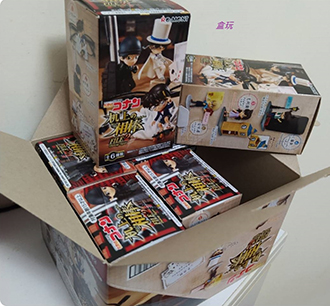
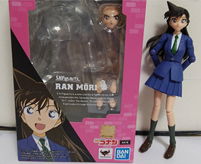
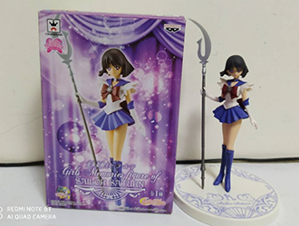
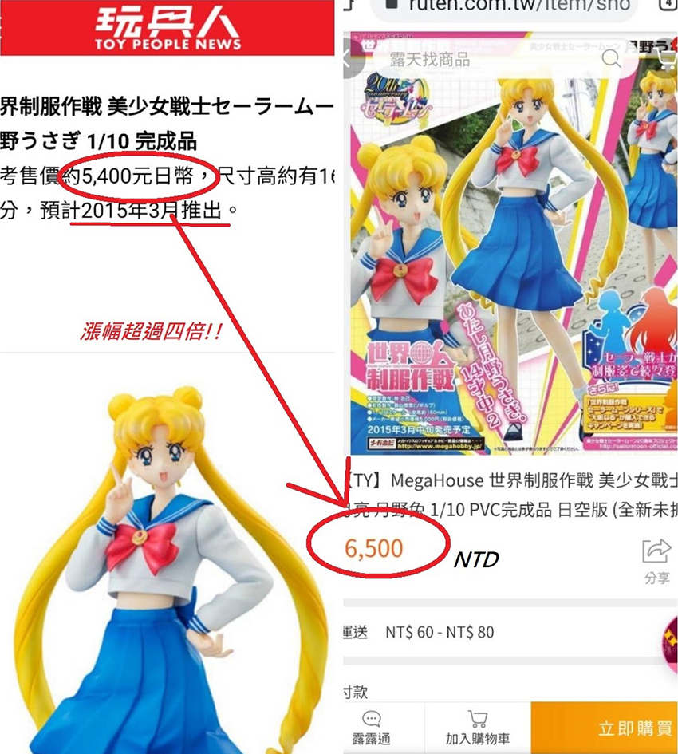
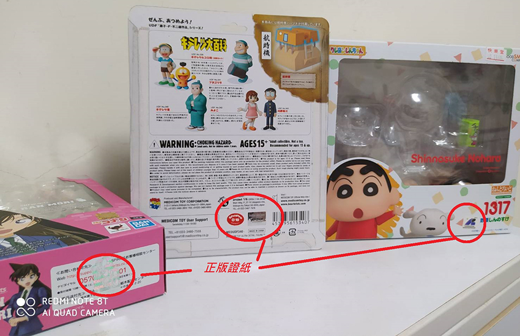
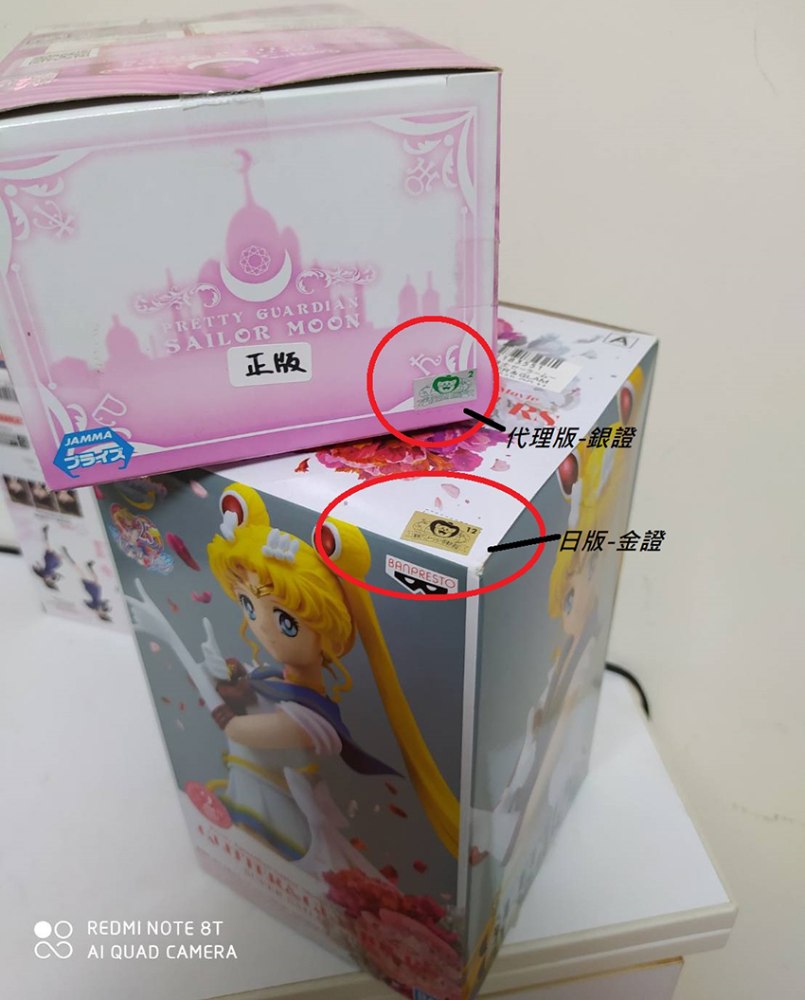

一、 前言
自己喜歡的動漫角色，從漫畫卡通變成3D的公仔，栩栩如生地出現在你眼前，一定是一件非常令人開心的事情吧!這就是收集公仔迷人的魅力所在，把原本平面的角色、人物、場景，變成具體的模型人偶，你可以近距離看到每個公仔的做工，360度無死角的觀察你所喜愛的動漫人物，彷彿重新進入那所喜愛的卡通動漫的場境中，重溫卡通動漫帶給你的美好。
這篇就是要分享有關蒐集公仔的一些觀念與心得，但因為公仔的範圍真的很大，所以這篇會以7年級生年代的懷舊公仔狀況為例，希望大家透過這篇介紹，能稍微了解公仔的世界。
二、 公仔分類
公仔大概可以分成五類，說明如下：
| 序 | 類型 | 簡介 | 實際圖片 |
| 1 | 扭蛋 | 約莫5cm以內，價格在150元以內。常見在扭蛋機販售，也會在公仔店有整組販售。 |  |
| 2 | 盒玩 | 約莫10cmn左右，價格250~450元左右。一般一套會有5~8的造型，未開盒前不知道自己會抽到哪一個，俗稱「盲抽」，開封當下才見真章。通常還會有隱藏版造型。 |  |
| 3 | PVC | 一般約15~20cm左右，但隨不同類型尺寸變化大，價格約在1000~3000元左右。PVC公仔類型很多，有擬真風格也有娃娃風Q版的(像是Good Smile Company黏土人)，有固定造型但也有可動、可換表情、有道具配件的(像是BANDAI S.H.Figuarts)。 |  |
| 4 | 景品 | 約15~25cm左右，價格多在800以內。類似較不精細的PVC，常放於夾娃娃機內，讓人抓取。可稱為比價性較高的入門公仔。 |  |
| 5 | GK | 約60公分以上的超大型公仔，一般會配上人物的技能特效或場景，價格幾乎破萬起跳。有專門的工作室製作，數量不但有限，且等待期通常逾半年，可謂是公仔中殿堂級收藏。 | N/A |
三、 公仔哪裡買?
| 公仔一般分成網路和實體，各別說明如下： 1. 網路部分： |
|||
如露天、YAHOO、蝦皮拍賣，基本上對於新出的公仔就是應有盡有了，也比實體店面便宜一些。美國卡通部分則可以參考「野獸國行動商城」。有些實體店面也會出自己的販售網站(見下段)，可以先搜尋了解一下公仔存貨狀況。但有些比較稀有品，甚至絕版品，也可以嘗試在國外網站尋寶，也許還有機會找到。甚至某些絕版公仔台灣已經炒到賣得太貴，反而在國外網站還有機會買到比較合理的價格。個人推薦國外網站如下：
另外，Facebook中也有一些公仔交流的社團，有時候可用低於市價的價格，買到喜歡的公仔，或者發現已經年代久遠的古董玩具，可以不定期去逛逛看看。個人推薦：
|
|||
| 2. 實體部分： | |||
其實蒐集公仔如果可以的話，還是建議先去實體店逛逛看看公仔本尊比較好，因為有時候公仔神韻如果不像，很可能就歪樓，所以實體店面還是有它不可取代的地位。 台灣各縣市都有很經典老字號的公仔店，也可以不帶目的的去逛逛，或許會與意想不到角色相遇。且目前實體公仔店也流行開放格子招租，隨著出售玩家的脫坑(不再收集公仔)、換坑(更換收集標的)，隔陣子再去都可能會看到新組合。 以下是我自己去過的推薦實體店：
|
|||
| 3. 另外推薦可以上「玩具人Toy People News」網站 | |||
| (https://www.toy-people.com/)，會有很多最新的公仔訊息。且強烈建議如果有喜歡的公仔，最好在預購時就先購入，因為據公仔店老闆說，公仔大概出超過半年以上，就可能開始有斷貨(漲價)可能。我自己經驗確實是如此，大概玩具出一年其實市面上就已經很少找到，網站上雖還在賣，但也跟預購價格落差20~30%。 | |||
四、 保值性與正版判斷
| 1. | 公仔如果保存良好，隔個幾年其實是有增值可能性的(特別是絕版品)。當然可能也會有價無市的情況，但普遍觀察幾乎都有明顯的漲幅。公仔不但滿足自我愛好，也是具有增值性的收藏喔。公仔保值的關鍵除了品項良好外，在有「原裝外盒」也是至關重要。某些玩家甚至買回公仔後，連外盒都不拆以利保值，所以入手玩具後，儘量保持盒裝完整，以利日後轉手可能。 |
| ※舉例來說，美少女戰士制服大作戰此系列的公仔，2015年發行至今價格已經翻了要4倍，我搜尋過香港/新加坡/德國/俄羅斯/西班牙等網站，價格幾乎都高居不下。 | |
|  | |
| 2. | 既然公仔有增值性，那判斷是否為「正版」則非常重要。一般扭蛋和盒玩因價格較低，較少盜版存在。但PVC及景品的市場中，則存在許多盜版商品。盜版一般稱為港版或祖國版，常常神韻塗裝完全與正版大相逕庭，一般從價格上也能略為分辨(太低價可能有詐)，建議直接詢問賣方正版與否，或要求看提供公仔的細節照片判斷，如能面交直接驗貨就更為理想。
而判斷是否為正版，除了從公仔本身塗裝精緻度判斷外，外盒上常會貼有「認證貼紙」(俗稱「證紙」)代表得到原動畫公司的授權，這也是為何上一點提到「保持盒裝」完整如此重要！ |
|  | |
| 而正版則又可細分為「日版」、「代理版」，日版是在日本當地販售的公仔，而代理版則指經原廠授權於海外發行的版本。兩者本質無異，甚至因為代理版是海外國家一次大量購入再行分銷，故售價會比日版的便宜，並市面上普遍日版保值及漲價空間較高。而「日版」、「代理版」的區分，如以東映動畫公司為例，日版是金色證紙(俗稱「金證」)，而代理版為白色或銀色證紙(俗稱「白證」或「銀證」)。 | |
|  | |
五、 結語
| 收集公仔是個有趣的活動，不但重溫童年，有又保值性。且還可以發現許多同好。每次的公仔買賣無論是舊有玩家轉手，或是玩具店老闆，一起聊聊總能發現驚喜之處，交到意想不到的朋友。希望大家透過這篇文章能稍微了解公仔的世界，有機會留意這些可愛的小東西吧。 |